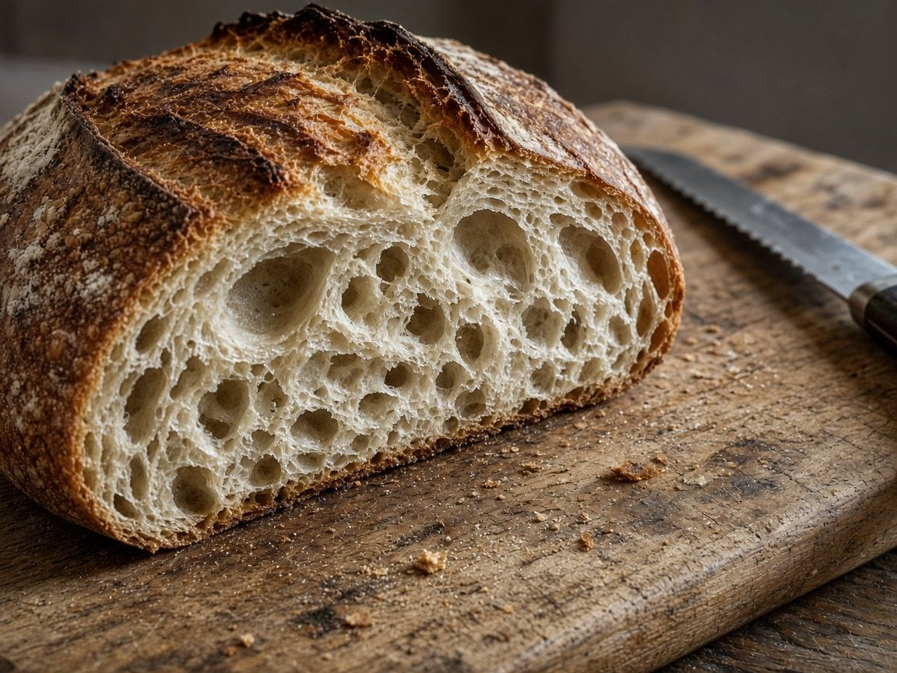
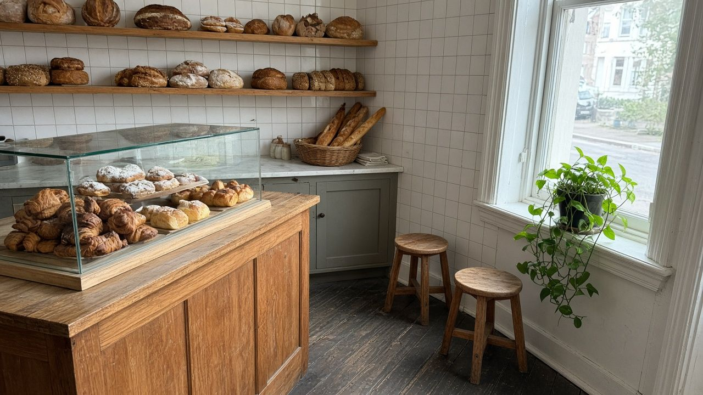
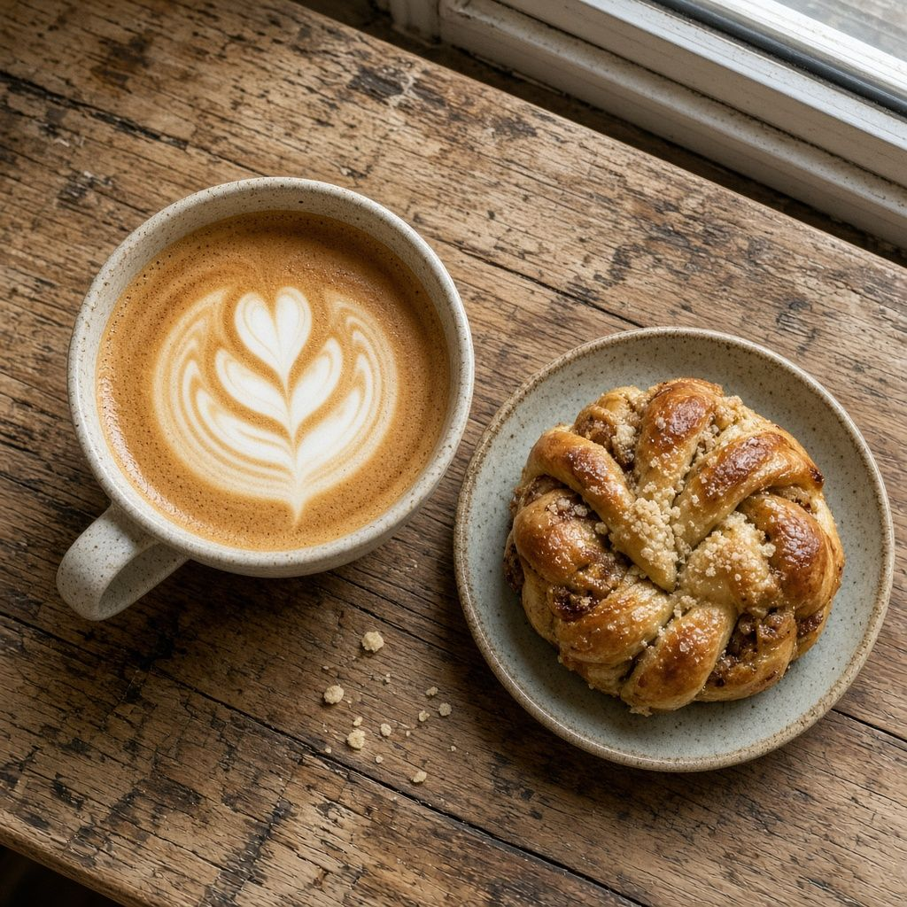
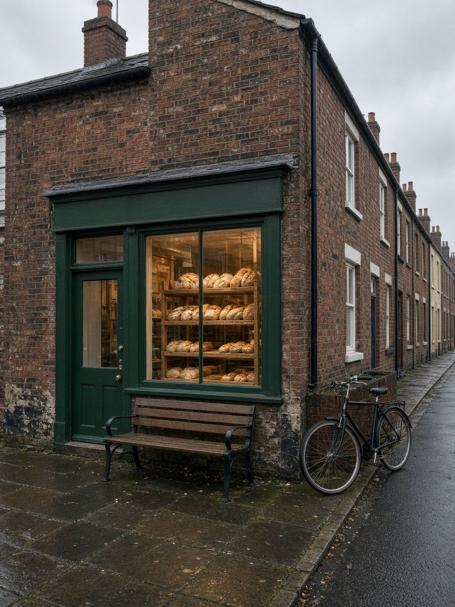
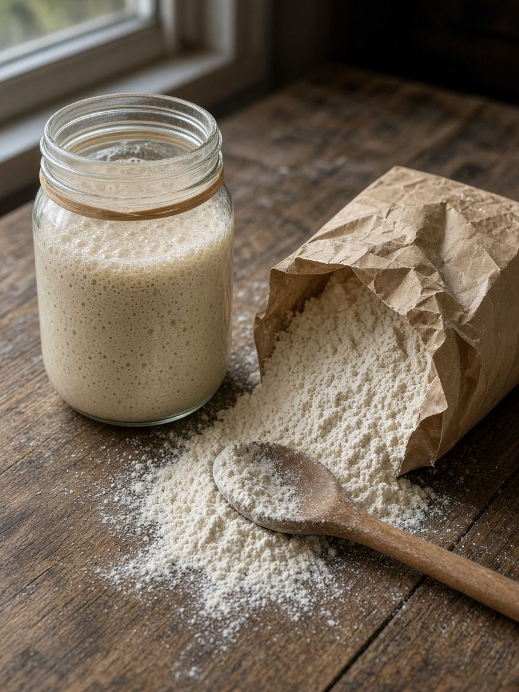

Skip to content
Demo website for a fictional bakery. Not a real business.
Gallery
A morning at Oatwick.
 Loaves cooling on the counter
Loaves cooling on the counter
The crumb of our country sourdough Cardamom knots and croissants, first tray
Cardamom knots and croissants, first tray
Inside the shop at opening time Mara shaping dough on a Friday
Mara shaping dough on a Friday
Flat white and a cardamom knot
The shopfront on Mercer Row
The starter, fed every morning